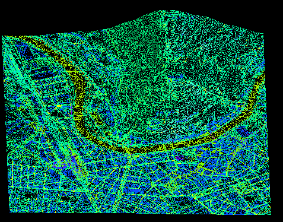
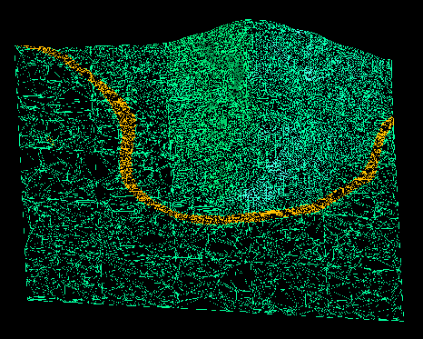
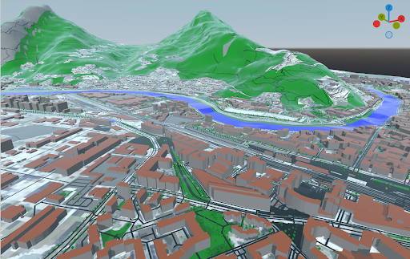

hid-1: Modélisation thermo-hydraulique urbaine multi-physique pour la simulation de la ville à l’échelle Exascale
1. Contexte du projet
Le projet s’inscrit dans le cadre du projet européen Hidalgo2, visant à porter les simulations complexes vers l’ère de l'Exascale. Vous rejoindrez l’équipe de développement de Ktirio, un logiciel de simulation thermique du bâtiment en pleine mutation pour devenir un simulateur urbain complet. L’enjeu est de dépasser la simple étude du bâti isolé pour intégrer finement dans les simulations son environnement urbain.
2. Thématique et Objectifs de recherche



L’objectif central est de développer un modèle de sol 1D multi-physique capable de simuler les interactions complexes thermique et hydraulique. Ce modèle est un chaînon important pour quantifier les îlots de chaleur urbains (ICU) et la résilience hydrologique des quartiers.
L’axe majeur du stage :
Physique des transferts thermiques échange sol-atmosphère (Modèle de sol)
-
Bilan radiatif : Prise en compte du rayonnement solaire incident, des échanges infra-rouge (IR) avec les façades environnantes via le calcul de facteurs de vue.
-
Phénomènes de surface : Modélisation de la convection atmosphérique et des flux de
3. Environnement technique et Méthodologie
Le développement s’appuiera sur la bibliothèque Feel++, boite à outils pour les méthodes de résolution des différents axes proposés ci dessus.
-
HPC & GPU : Selon l’avancement, une optimisation des algorithmes pour le calcul sur GPU sera envisagée afin de répondre aux exigences de performance d’Hidalgo2.